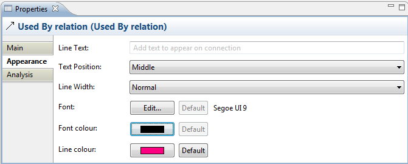

Selecting a relationship connection in a View means that you can edit or view additional visual properties in the Properties Window. Different visual settings can be applied to a connection for each separate occurrence in a View. For example, the connection line "Used By" may be coloured black in one View, and blue in another View.
The Appearance Tab
This tab is only available when a relationship is selected in a View.
| Text Position: | Specifies the position of the text that will appear next to the line on the View. Options are "Source", "Middle" and "Target". |
Line Width: |
Specifies the width of the connection line. Options are "Normal", "Medium" and "Heavy". |
| Font: | Specifies the font used for the text in the selected connection. The "Default" button sets the font to the default setting as set in Preferences. |
| Font colour: | Specifies the colour of the font used for the text in the selected connection. The "Default" button sets the fill colour to the default setting. |
| Line colour: | Specifies the colour of the connection line. The "Default" button sets the line colour to the default setting. |

Editing the "Appearance" Properties for a Relationship Connection in a View